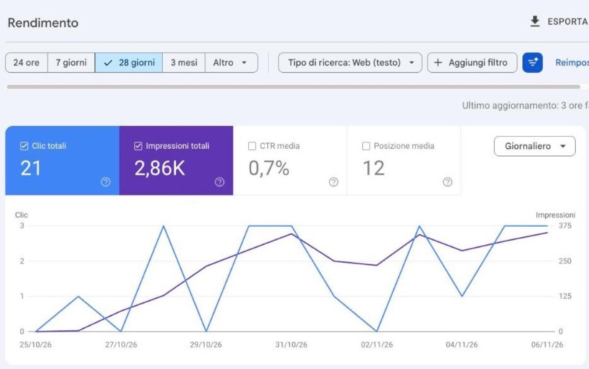

2.135 volte su Google in sette giorni: com'è nato Mangiare e dormire in Mugello
Una guida gratuita a 625 ristoranti, bar, alberghi e B&B di Mugello e Valdisieve, online dal 26 ottobre. I numeri di Google e cosa dicono a chi ha un locale.

Il 26 ottobre, di sera, ho acceso un sito nuovo. Undici giorni dopo, il 6 novembre, Google lo ha mostrato 351 volte in una sola giornata.
Si chiama mangiaredormiremugello.it: una mappa di ristoranti, trattorie, pizzerie, bar, agriturismi, alberghi, B&B, rifugi, campeggi e aree camper del Mugello e della Valdisieve. Ognuno ha la sua scheda con telefono, indirizzo e la strada per arrivarci. È gratuito, non chiede registrazioni e non usa cookie.
Da dove vengono i dati
La base è l'elenco ufficiale dell'Ufficio Turismo dell'Unione Montana dei Comuni del Mugello. In Valdisieve un elenco così non esiste: sono partito da OpenStreetMap e ho controllato le strutture una per una.
Poi ci sono i titolari. Il giorno dopo l'uscita mi ha scritto quello di una gelateria di Borgo San Lorenzo per farsi aggiungere. Da allora la guida si corregge con le segnalazioni: un locale nuovo, uno che ha chiuso, un sushi che ha cambiato paese.
Oggi le schede sono 625, in 15 Comuni. La parte tecnica l'ho costruita con l'ausilio dell'intelligenza artificiale: io decido cosa serve e controllo i dati, la macchina fa il lavoro pesante.
Cosa dice Google
Search Console è il registro in cui Google annota quante volte un sito esce tra i risultati. Ecco le prime due settimane:
2.135 comparse dal 31 ottobre al 6 novembre;
73 il 27 ottobre, quasi quintuplicate dieci giorni dopo;
343 ricerche diverse dietro questi numeri.
Una precisazione, per onestà: comparse non vuol dire visite. I clic sono stati 21 in tutto. La spiegazione più probabile è che chi cerca un ristorante trovi il numero già tra i risultati e chiami senza entrare. Per chi lo gestisce, la telefonata è ciò che conta.
La gente cerca un nome
La sorpresa è arrivata dalle parole usate. Quasi nessuno digita «dove mangiare in Mugello». Si cerca il nome del posto, spesso seguito dal paese: «bar dei vicari scarperia», «il golosone borgo san lorenzo», «osteria del vento pietramala».
Il Bar e Hotel dei Vicari è uscito 132 volte, il Golosone 80, l'Osteria del Vento 74, il Civico 11 ne conta 64, Saru 61. Su 2.861 comparse complessive, 1.520 vengono da ricerche con un nome leggibile; le altre restano nascoste per tutelare la privacy degli utenti.
Tradotto per chi ha un'attività: quando un cliente mette il vostro nome su Google, accanto alla vostra pagina può spuntare anche la scheda della guida. Una vetrina in più, senza muovere un dito.
Cosa è cambiato in due settimane
Nel frattempo sono arrivate le novità. Per ogni Comune ci sono gli eventi del fine settimana, è nata la sezione Notizie ed è arrivato Gino, l'assistente che risponde a chi chiede dove mangiare o dormire, per iscritto o a voce.
Se avete un locale
Cercate la vostra attività su https://mangiaredormiremugello.it e, se manca, se un dato è sbagliato o se avete chiuso, scrivetemi: sistemo io. La scheda resta gratuita. Chi vuole qualcosa in più trova le proposte nella pagina per i titolari: https://mangiaredormiremugello.it/per-i-titolari.html
E voi, quando cercate un posto per cena, fate una domanda a Google o andate dritti al nome?